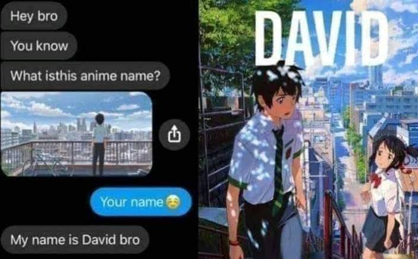

History
Semua berawal pada Selasa, 14 April 2020. Pada pukul 13:00 Waktu Indonesia Barat. Waktu itu adalah waktu dimana Saya masih menggunakan Facebook dan menjadi salah satu anggota grup meme. Pandemi terus berangsur- angsur semakin memburuk sejak awal kemunculannya yaitu pada tahun 2019. Penyeberan virus COVID-19 yang dapat ditularkan dengan berbagai cara menyebabkan satu dunia dikarantina.
COVID-19 MAP
Itu adalah keadaan yang sedang dialami dunia pada saat itu. Hal ini menyebabkan segala sesuatu dilakukan secara Daring. Saya menghabiskan waktu luang yang Saya miliki didalam Facebook untuk melihat- lihat meme disana dan Saya menemukan salah satu meme tentang animasi yang berasal dari negara Jepang yang dikenal sebagai Anime.
Meme Anime
Ternyata judul dari Anime tersebut adalah Your Name (Jepang: 君の名は。; Romaji: Kimi no Na wa; harfiah: "Namamu."). Karena mulai tertarik, kemudian mencoba untuk menontonnya di Youtube. Namun setelah setengah perjalanan durasi video, Ternyata Saya salah menonton Anime. Yang saat itu ditonton bukanlah Your Name, melainkan Anime lain yaitu 5 Centimeters Per Second.
5 Centimeters Per Second
Karena di Youtube tidak ada, Saya mengunduhnya lewat Google dan mendapatkannya.

Your Name
Nothing
Nothing